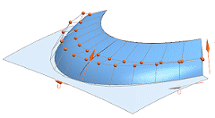
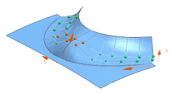

Activity: X-form enhancements
Estimated time to complete: 7–10 minutes
|
 |
 |
|
|
|
In this activity, you will become familiar with enhancements to X-form that improve workflow:
-
Editing multiple faces in a single operation.
-
Specifying persistent boundary constraints.
-
Moving poles proportionately based on iso-parameters and multiple master poles.
Open the X-form enhancements activity.